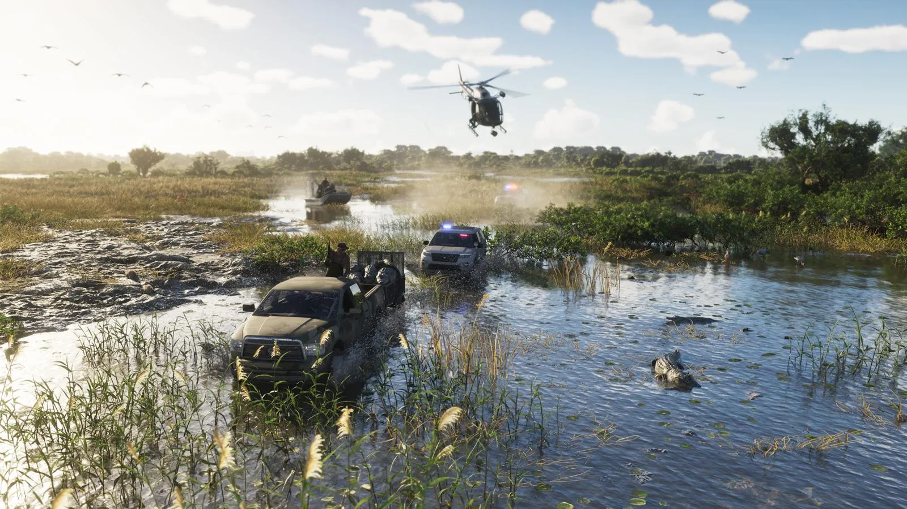
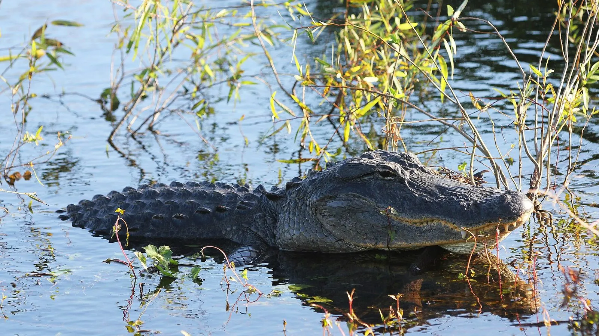
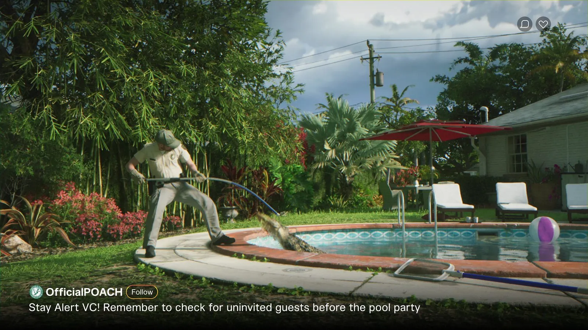

Аллигаторы Леониды и Флориды
Опубликовано:
Аллигаторы в болоте у дороги — для Флориды не экзотика: по данным FWC, в штате около 1,3 млн диких аллигаторов, и живут они во всех 67 округах.


- На официальном скриншоте Grassrivers из воды торчат аллигаторы, а через болото едут пикап и полицейская машина.
- В первом трейлере ловец вытаскивает аллигатора из бассейна: «проверьте, нет ли незваных гостей перед вечеринкой».
- По данным FWC, во Флориде около 1,3 млн диких аллигаторов, они есть во всех 67 округах.
- В 1967 году вид внесли в список исчезающих, а в 1987-м признали полностью восстановленным.
Что в игре
Официальный скриншот Grassrivers: мутная болотная вода, кочки с травой, над болотом вертолёт. Через воду пробирается грязный пикап, за ним полицейская машина с мигалками. Прямо рядом с машинами из воды торчат спины аллигаторов.
В первом трейлере аллигатор появляется ещё раз — во дворе частного дома. Мужчина в форме вытаскивает его петлёй из бассейна, а подпись в соцсети шутит: «Не забудьте проверить, нет ли незваных гостей, перед вечеринкой у бассейна».

Что в реальности
Американский аллигатор — один из символов Флориды. По данным Комиссии по охране рыб и дикой природы штата (FWC), в штате около 1,3 млн диких аллигаторов, и встречаются они во всех 67 округах: в болотах, озёрах, каналах, прудах у жилых домов.
В середине XX века аллигаторов почти выбили ради кожи. В 1967 году вид внесли в список исчезающих, охоту запретили, и к 1987 году популяция полностью восстановилась.
Если аллигатор длиной от 4 футов (около 1,2 м) угрожает людям или животным, жители Флориды звонят на горячую линию FWC 866-FWC-GATOR. Приезжает лицензированный ловец — как в кадре из трейлера.
Совпадает и отличается
| Флорида | GTA 6 | |
|---|---|---|
| Аллигаторы в болоте | Да | 🟢 Да |
| Аллигатор в бассейне частного дома | Бывает | 🟢 Да |
| Ловец, который убирает аллигатора | Лицензированные ловцы FWC | 🟢 Да |
| Сколько их в игре | — | Узнаем в игре |
Источники: Rockstar Games (официальный скриншот Grassrivers; трейлер 1 GTA 6); FWC — American Alligator, Statewide Nuisance Alligator Program; U.S. Fish and Wildlife Service.
Реальные фото: Фото: judygva (back in town and trying to catch up), CC BY 2.0 · Wikimedia Commons. Кадры игры: Rockstar Games.
Каждый день — одно сравнение: кадр игры рядом с реальным фото. Подписывайтесь:
YouTubeInstagramTikTok